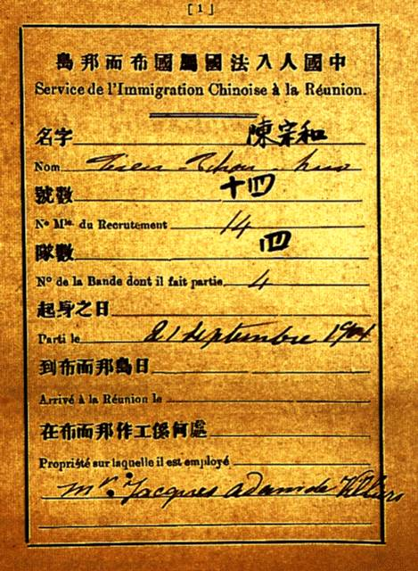

L'engagement
volontaire des populations étrangères à l'île était
la solution qu'avaient trouvé les exploitants pour continuer à
importer de la main d'œuvre bon marché dans leurs plantations. En effet, après
l'émencipation, peu d'esclaves affranchis décidèrent
de rester au service de leur maître, préférant se livrer
au vagabondage ou s'installer dans les hauts avec les anciens marrons (esclaves
fugitifs) et les blancs ruinés par la crise du café, pour vivre
comme leurs voisins, de cultures vivrières.
Des recruteurs allaient dans les ports de commerce de la cote orientale de l'Inde,
de la Chine, à Madagascar et en Afrique et ils faisaient signer des
engagement de travail pour 5 ans maximum, mais renouvelable, aux autochtones.
Ces derniers étaient ensuite emmenés à la Réunion pour y travailler moyennant un maigre salaire et
au terme du contrat, les engagés avaient le choix entre signer un nouvel
engagement ou rentrer chez eux en charter (... pardon, en bateau).

Livret de Tien Tchou Huo originaire de Foutchéou,
engagé en 1901 (source : Archives départementales)
Tout engagé est porteur d'un livret qui indique la durée de l'engagement, le nom du propriétaire terrien qui l'emploie et ses conditions de travail et de rémunération.
L'engagement est une nouvelle forme d'immigration qui a continué
de augmenter la population de l'île.
Entre 1848 et 1885. 117.813
engagés sont arrivés sur l'île et malgré le
rapatriement de certain d'entre eux, (1200 à 2000 par an) on
estime que 46.000 individus sont restés à
l'île de la Réunion élargissant encore la diversité
ethnique du département d'outre-mer.
Beaucoup de Chinois et de Zarabs
profitèrent de la fin de leur engagement pour ouvrir des boutiques sur
l'île et faire du commerce. Aujourd'hui encore beaucoup de commerces sont tenus par les descendants de ces engagés et certains on su faire fructifier leurs affaires.